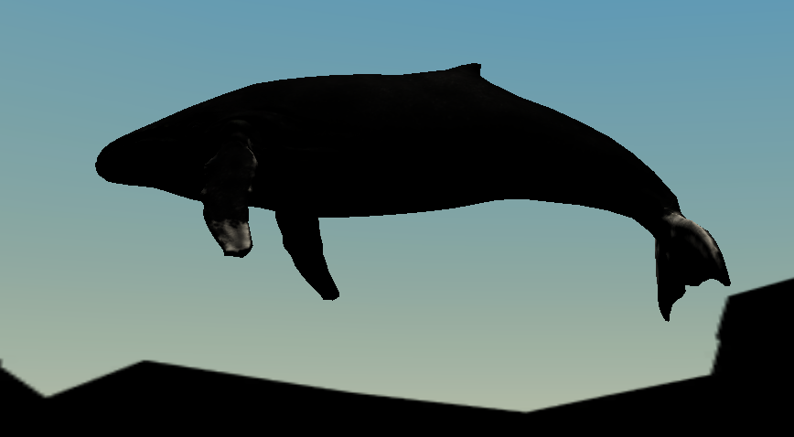

Brain Blast
Educational game designed to teach high school students about phylogenetic trees and how they are created. Game was by an interdisciplinary team of computer science, computer engineering and biology students for our Bioinformatics Algorithms class at Cal Poly.
Why did I pursue this project?
With not much direction except for the basic requirements of presenting something educational related to bioinformatics, our team initially chose to create a website tool similar to BLAST which compared traits between organisms and created phylogenetic trees. Since I had a background in creating video games from a previous class, I pitched the idea of making a video game instead of a technical website. I am not an expert when it comes to web development, so I was relieved when the rest of the team agreed a game would be an interesting medium to share some of the topics we learned throughout our class.
The Process
We reflected on our individual strengths and decided that if Biology students could create the educational content, the development team could create the platform in which to present it to the players and students.
Having only about 8 weeks to produce something substantial we decided that phylogenetic trees had the potential interesting and are very useful to the field of bioinformatics.
Our game was built around the idea that phylogenetic trees can reveal some unexpected truths about how closely related certain animals are to one another. We focused on the whale and what animal is most to it, the answer may surprise you!
Our team was split into a research team, comprised of all of the Biology students, and a development team made up of the computer science/engineering students. Even though our roles we’re distinct a lot of collaboration was required between members on both teams to coordinate content, hammer out timelines, and determine the best way to present the information gathered.
Technologies Used
To build the game we used the Unity Game Engine and Visual Studio Code to write all of the C# game logic and behavior scripts. For the game’s assets, we only used free assets found in the Unity asset store from a variety of different developers.
The research team used the web application, BLAST, in their research and to create the phylogenetic tree content for our project. They also went through multiple science journals to find data that helped guide our project.
Challenges
Between taking classes and collaborating fully virtual environment to working with majors other than our own, this project had its fair share of challenges to overcome.
Having been the only one with previous game development experience, I had to instill confidence in the project with the rest of the team. I did this by providing my teammates of a general description of what we would need in order to succeed. Firstly, we needed to find overlap in the animals that we wanted to use within our game. The biology students had chosen a set of animals that would drive the players research as to what animal is most evolutionarily related to the whale. The development team then had to make sure we could find free assets that could match their list. David Lutze, the lead artist/level designer, made do with the list and came up with solutions to situations where there weren’t any assets available. For example, we couldn’t get a 3D asset for a giraffe. Instead, we used a tall tree with a mini-map marker to convey that giraffe DNA was present at its food source.
Merging Unity projects and assets was another challenge the development team faced. When working with unity, it is important that no tow people are working on the same resources as is the same with any other collaborative project. Using version control systems like Git prevents these sorts of issues from arising, however within Unity objects and object variables can be set in the gui which isn’t written in the code files themselves. Instead, they are written in these large metadata files. For reasons unknown, even when we included these metadata files in our commits, objects weren’t properly linked, and they actually overwrote the other metadata files. This overwriting wasn’t discovered until the we were nearly done with our project and the end date was near. Needless to say we went into firefighting mode and had to stich everything back together again and try and get our work integrated with each other. As David completed the level design and asset creation, we decided to export his work as a package and then import it into my work. That way we would be able to combine all of the logic and user interfaces that I had created with his work and put the finishing touches on our game. We did this for the remainder of our project as we were constrained by time and didn’t want to break anything like we had before.
Although our team worked diligently to successfully complete our project, we did encounter some obstacles while collaborating with one another. The most obvious one was having to work together in an entirely virtual environment from different locations. Doing this in the middle of a pandemic and keeping in mind that we each had other classes to attend to, we decided to set some expectations for our meetings and try to make our time together as efficient as possible. Sometimes meetings would last 15 minutes while others would take a couple hours when we needed to finalize things. Overall, we successfully respected each other’s time and communicated effectively when members couldn’t attend. Within our team, we unfortunately had a member who was missing meetings consistently and not following along with the rest of the team. After multiple attempts to try and figure something out with the individual, the team decided to contact our professor and let them know of our situation. It is likely the student dropped out of the course and we weren’t made aware of it. Other than that instance, our team was cohesive and we were successfully able to get everything done.
Successes
While developing our project we were required to post updates in our classroom’s slack page. These updates included video demos of our progress which ended up generating a significant amount of attention from the other groups as we were the only team making a game.
When we released our final game, we had 17 different people download and play it. Most of the feedback we received was positive with the exception of a minor bug complaint which has since been fixed. Our project presentation to the 70 students in the class was successful and we ended up earning an A+ on this assignment.
Our team also made this game publicly available on itch.io where it has been enjoyed by other people as well.